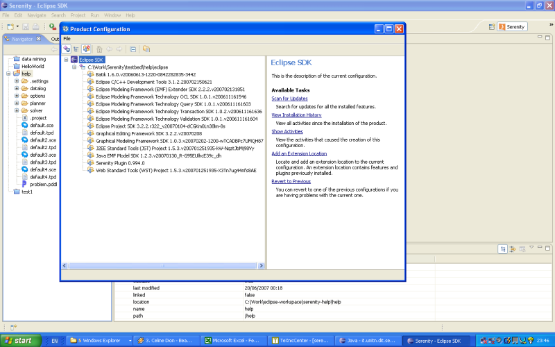

Installation
To instal the plugin you can follow these steps:
- Download eclipse 3.2.2 from www.eclipse.org( operating system specific)
- Download the required plugins from their respective site or go to the repository under :
Sistar - UNITN / Sistar Tool(Eclipse) / Required Plugins
- Each jar files will contain eclipse directory which in turn contains the plugins and features directory. Extract the jar files to the eclipse directory such that the contents of plugins and features directory will be unzipped to the plugins and features directory of the eclipse respectively.
- In the same way download the latest Sistar Tool release:
Sistar Tool (Eclipse) Binaries vx.xxx.zip found in the repository under:
Sistar - UNITN / Sistar Tool(Eclipse) / Releases
- Remove if there is any previous version of the tool in the features and plugins directory
- Extract the Sistar plugin in the same way as the other plugins.
- Restart Eclipse
- Go to Help->Software Updates-> Manage Configuration to check if the installation is successful.
- Note that the Sistar Plugin should be listed and all the other plugins should be installed properly ( no cross mark ).
